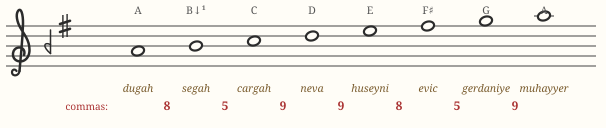
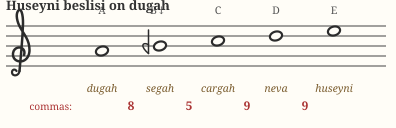
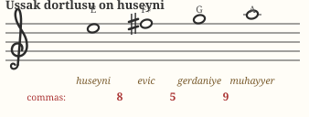
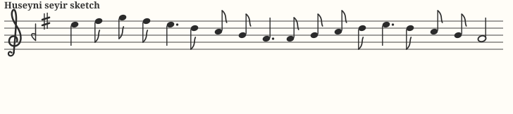
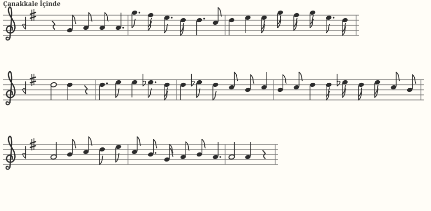

Chapter 08 · fourth makamMakam Hüseyni
If Uşşak is the voice of intimacy, Hüseyni is the voice of the open steppe: proud, spacious, direct. Ethnomusicologists often call its scale the unifying row of Anatolian folk music — an enormous share of türküs breathe this makam.
Identity card
| Tonic (durak) | dügâh — written A |
|---|---|
| Dominant (güçlü) | hüseynî — E, the 5th degree (its namesake note) |
| Leading tone (yeden) | rast — G, a whole tone below |
| Construction | Hüseyni beşli on dügâh + Uşşak dörtlü on hüseynî |
| Seyir direction | descending–ascending (inici-çıkıcı) |
| Key signature |  segâh (B −1) + eviç (F +4) — same as Rast segâh (B −1) + eviç (F +4) — same as Rast |
The scale

Hüseyni versus Uşşak is this course's subtlest pair — the first four notes are identical. The differences: Hüseyni's sixth degree is bright eviç (F♯−1) where Uşşak has plain acem (F♮), and Hüseyni's center of gravity sits a step higher, on E rather than D. Compare the sixths:
The two genera


Elegant symmetry: the upper genus is an Uşşak tetrachord transposed to E — so the top of Hüseyni relates to its güçlü exactly as the bottom of Uşşak relates to its tonic. The two makams are structural siblings, which is why folk melodies drift between them so easily.
Seyir: how Hüseyni moves
Hüseyni characteristically enters high — on or around the güçlü E, often even from muhayyer (high A) in folk style — announces the bright eviç, then unwinds downward through the pentachord to rest on dügâh. A rise back through the lower genus and a settled final descent complete the arc. Where Uşşak murmurs upward, Hüseyni proclaims downward.

Play it yourself
A live Hüseyni instrument at exact comma pitch. Home row A S D F G H J K L ; ', or click and hold the keys.
Thick border = tonic · double border = güçlü · dashed = yeden. Enter high, folk-style: L K J H (muhayyer… wait for it… down to hüseynî), then the long descent H G F D S. Toggle J (eviç) against Uşşak's F♮ in the previous chapter to nail the sibling difference.
Repertoire to listen for
| Piece | What it is |
|---|---|
| “Çanakkale İçinde Aynalı Çarşı” | The Gallipoli lament, catalogued in Hüseyni — high, keening entry and a long descent, the seyir in miniature. (Some variants drift toward neighboring makams; the classic TRT version is Hüseyni.) |
| Anatolian uzun hava & bozlak traditions | The free-rhythm laments of central Anatolia ride the Hüseyni row; listen to any Neşet Ertaş bozlak to hear its raw form. |
| Classical Hüseyni peşrevs (e.g., Lavtacı Andon, Tatyos Efendi repertoire) | The courtly face: stately instrumental preludes built on the same row. |
Hear it: Çanakkale İçinde
The Gallipoli song from the standard notation (SymbTr corpus — which catalogues this version as Nevâ, Hüseyni's close sibling that shares the same lower tetrachord but pivots on nevâ). Hear the verse start low and restrained, then the sudden high cry on “vurdular beni,” and the refrain's long descent to dügâh:
